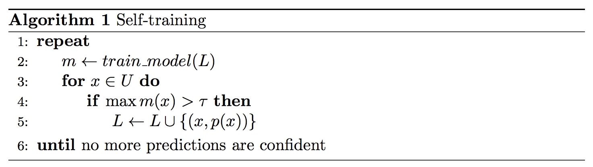
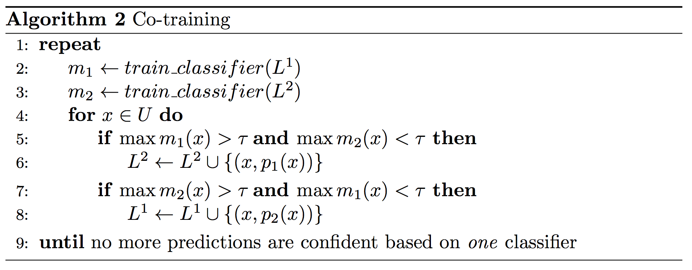
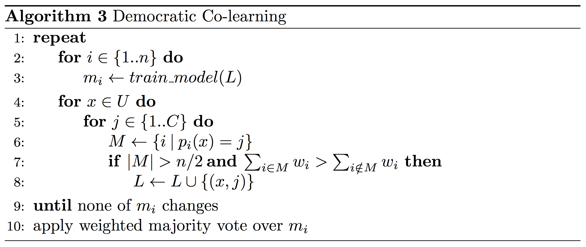
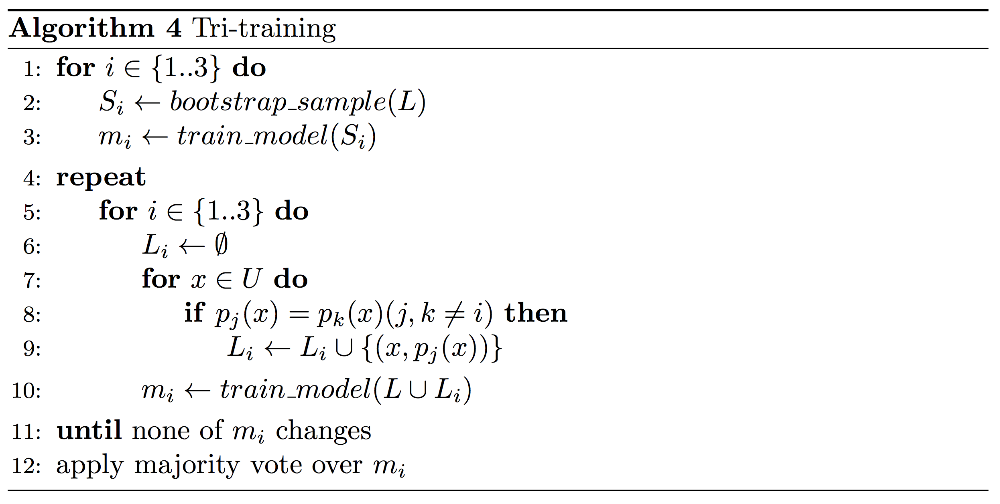
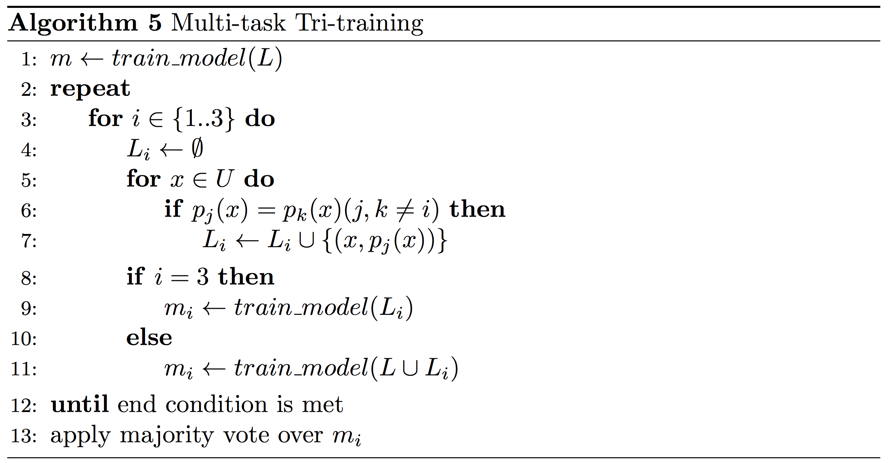
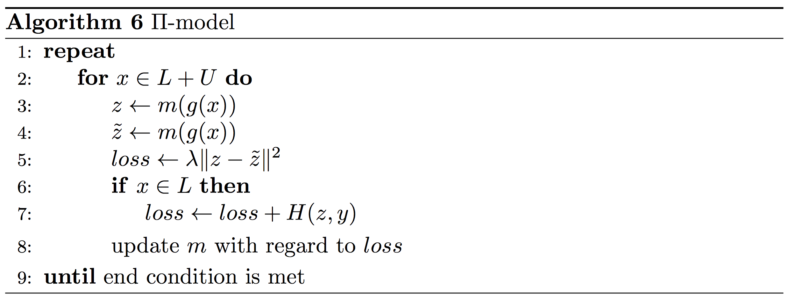
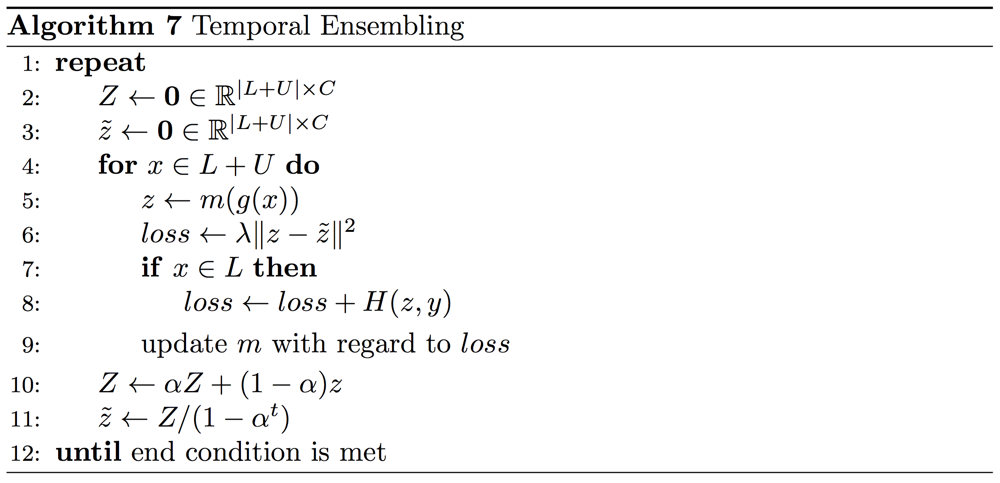

An overview of proxy-label approaches for semi-supervised learning
Note: Parts of this post are based on my ACL 2018 paper Strong Baselines for Neural Semi-supervised Learning under Domain Shift with Barbara Plank.
Table of contents:
- Self-training
- Multi-view training
- Co-training
- Democratic Co-learning
- Tri-training
- Tri-training with disagreement
- Asymmetric tri-training
- Multi-task tri-training
- Self-ensembling
- Ladder networks
- Virtual Adversarial Training
- \(\Pi\) model
- Temporal Ensembling
- Mean Teacher
- Related methods and areas
- Distillation
- Learning from weak supervision
- Learning with noisy labels
- Data augmentation
- Ensembling a single model
Unsupervised learning constitutes one of the main challenges for current machine learning models and one of the key elements that is missing for general artificial intelligence. While unsupervised learning on its own is still elusive, researchers have a made a lot of progress in combining unsupervised learning with supervised learning. This branch of machine learning research is called semi-supervised learning.
Semi-supervised learning has a long history. For a (slightly outdated) overview, refer to Zhu (2005) [1] and Chapelle et al. (2006) [2]. Particularly recently, semi-supervised learning has seen some success, considerably reducing the error rate on important benchmarks. Semi-supervised learning also makes an appearance in Amazon's annual letter to shareholders where it is credited with reducing the amount of labelled data needed to achieve the same accuracy improvement by \(40\times\).
In this blog post, I will focus on a particular class of semi-supervised learning algorithms that produce proxy labels on unlabelled data, which are used as targets together with the labelled data. These proxy labels are produced by the model itself or variants of it without any additional supervision; they thus do not reflect the ground truth but might still provide some signal for learning. In a sense, these labels can be considered noisy or weak. I will highlight the connection to learning from noisy labels, weak supervision as well as other related topics in the end of this post.
This class of models is of particular interest in my opinion, as a) deep neural networks have been shown to be good at dealing with noisy labels and b) these models have achieved state-of-the-art in semi-supervised learning for computer vision. Note that many of these ideas are not new and many related methods have been developed in the past. In one half of this post, I will thus cover classic methods and discuss their relevance for current approaches; in the other half, I will discuss techniques that have recently achieved state-of-the-art performance. Some of the following approaches have been referred to as self-teaching or bootstrapping algorithms; I am not aware of a term that captures all of them, so I will simply refer to them as proxy-label methods.
I will divide these methods in three groups, which I will discuss in the following: 1) self-training, which uses a model's own predictions as proxy labels; 2) multi-view learning, which uses the predictions of models trained with different views of the data; and 3) self-ensembling, which ensembles variations of a model's own predictions and uses these as feedback for learning. I will show pseudo-code for the most important algorithms. You can find the LaTeX source here.
There are many interesting and equally important directions for semi-supervised learning that I will not cover in this post, e.g. graph-convolutional neural networks [3].
Self-training
Self-training (Yarowsky, 1995; McClosky et al., 2006) [4, 5] is one of the earliest and simplest approaches to semi-supervised learning and the most straightforward example of how a model's own predictions can be incorporated into training. As the name implies, self-training leverages a model's own predictions on unlabelled data in order to obtain additional information that can be used during training. Typically the most confident predictions are taken at face value, as detailed next.
Formally, self-training trains a model \(m\) on a labeled training set \(L\) and an unlabeled data set \(U\). At each iteration, the model provides predictions \(m(x)\) in the form of a probability distribution over the \(C\) classes for all unlabeled examples \(x\) in \(U\). If the probability assigned to the most likely class is higher than a predetermined threshold \(\tau\), \(x\) is added to the labeled examples with \(\DeclareMathOperator*{\argmax}{argmax} p(x) = \argmax m(x)\) as pseudo-label. This process is generally repeated for a fixed number of iterations or until no more predictions on unlabelled examples are confident. This instantiation is the most widely used and shown in Algorithm 1.

Classic self-training has shown mixed success. In parsing it proved successful with small datasets (Reichart, and Rappoport, 2007; Huang and Harper, 2009) [6, 13] or when a generative component is used together with a reranker when more data is available (McClosky et al., 2006; Suzuki and Isozaki , 2008) [7]. Some success was achieved with careful task-specific data selection (Petrov and McDonald, 2012) [8], while others report limited success on a variety of NLP tasks (He and Zhou, 2011; Plank, 2011; Van Asch and Daelemans, 2016; van der Goot et al., 2017) [9, 10, 11, 12].
The main downside of self-training is that the model is unable to correct its own mistakes. If the model's predictions on unlabelled data are confident but wrong, the erroneous data is nevertheless incorporated into training and the model's errors are amplified. This effect is exacerbated if the domain of the unlabelled data is different from that of the labelled data; in this case, the model's confidence will be a poor predictor of its performance.
Multi-view training
Multi-view training aims to train different models with different views of the data. Ideally, these views complement each other and the models can collaborate in improving each other's performance. These views can differ in different ways such as in the features they use, in the architectures of the models, or in the data on which the models are trained.
Co-training Co-training (Blum and Mitchell, 1998) [17] is a classic multi-view training method, which makes comparatively strong assumptions. It requires that the data \(L\) can be represented using two conditionally independent feature sets \(L^1\) and \(L^2\) and that each feature set is sufficient to train a good model. After the initial models \(m_1\) and \(m_2\) are trained on their respective feature sets, at each iteration, only inputs that are confident (i.e. have a probability higher than a threshold \(\tau\)) according to exactly one of the two models are moved to the training set of the other model. One model thus provides the labels to the inputs on which the other model is uncertain. Co-training can be seen in Algorithm 2.  In the original co-training paper (Blum and Mitchell, 1998), co-training is used to classify web pages using the text on the page as one view and the anchor text of hyperlinks on other pages pointing to the page as the other view. As two conditionally independent views are not always available, Chen et al. (2011) [19] propose pseudo-multiview regularization (Chen et al., 2011) in order to split the features into two mutually exclusive views so that co-training is effective. To this end, pseudo-multiview regularization constrains the models so that at least one of them has a zero weight for each feature. This is similar to the orthogonality constraint recently used in domain adaptation to encourage shared and private spaces (Bousmalis et al., 2016) [20]. A second constraint requires the models to be confident on different subsets of \(U\). Chen et al. (2011) [18] use pseudo-multiview regularization to adapt co-training to domain adaptation.
Democratic Co-learning Rather than treating different feature sets as views, democratic co-learning (Zhou and Goldman, 2004) [21] employs models with different inductive biases. These can be different network architectures in the case of neural networks or completely different learning algorithms. Democratic co-learning first trains each model separately on the complete labelled data \(L\). The models then make predictions on the unlabelled data \(U\). If a majority of models confidently agree on the label of an example, the example is added to the labelled dataset. Confidence is measured in the original formulation by measuring if the sum of the mean confidence intervals \(w\) of the models, which agreed on the label is larger than the sum of the models that disagreed. This process is repeated until no more examples are added. The final prediction is made with a majority vote weighted with the confidence intervals of the models. The full algorithm can be seen below. \(M\) is the set of all models that predict the same label \(j\) for an example \(x\).  Tri-training Tri-training (Zhou and Li, 2005) [14] is one of the best known multi-view training methods. It can be seen as an instantiation of democratic co-learning, which leverages the agreement of three independently trained models to reduce the bias of predictions on unlabeled data. The main requirement for tri-training is that the initial models are diverse. This can be achieved using different model architectures as in democratic co-learning. The most common way to obtain diversity for tri-training, however, is to obtain different variations \(S_i\) of the original training data \(L\) using bootstrap sampling. The three models \(m_1\), \(m_2\), and \(m_3\) are then trained on these bootstrap samples, as depicted in Algorithm 4. An unlabeled data point is added to the training set of a model \(m_i\) if the other two models \(m_j\) and \(m_k\) agree on its label. Training stops when the classifiers do not change anymore.  Despite having been proposed more than 10 years ago, before the advent of Deep Learning, we found in a recent paper (Ruder and Plank, 2018) [22] that classic tri-training is a strong baseline for neural semi-supervised with and without domain shift for NLP and that it outperforms even recent state-of-the-art methods.
Tri-training with disagreement Tri-training with disagreement (Søgaard, 2010) [15] is based on the intuition that a model should only be strengthened in its weak points and that the labeled data should not be skewed by easy data points. In order to achieve this, it adds a simple modification to the original algorithm (altering line 8 in Algorithm 2), requiring that for an unlabeled data point on which \(m_j\) and \(m_k\) agree, the other model \(m_i\) disagrees on the prediction. Tri-training with disagreement is more data-efficient than tri-training and has achieved competitive results on part-of-speech tagging (Søgaard, 2010).
Asymmetric tri-training Asymmetic tri-training (Saito et al., 2017) [16] is a recently proposed extension of tri-training that achieved state-of-the-art results for unsupervised domain adaptation in computer vision. For unsupervised domain adaptation, the test data and unlabeled data are from a different domain than the labelled examples. To adapt tri-training to this shift, asymmetric tri-training learns one of the models only on proxy labels and not on labelled examples (a change to line 10 in Algorithm 4) and uses only this model to classify target domain examples at test time. In addition, all three models share the same feature extractor.
Multi-task tri-training Tri-training typically relies on training separate models on bootstrap samples of a potentially large amount of training data, which is expensive. Multi-task tri-training (MT-Tri) (Ruder and Plank, 2018) aims to reduce both the time and space complexity of tri-training by leveraging insights from multi-task learning (MTL) (Caruana, 1993) [23] to share knowledge across models and accelerate training. Rather than storing and training each model separately, MT-Tri shares the parameters of the models and trains them jointly using MTL. Note that the model does only pseudo MTL as all three models effectively perform the same task.
The output softmax layers are model-specific and are only updated for the input of the respective model. As the models leverage a joint representation, diversity is even more crucial. We need to ensure that the features used for prediction in the softmax layers of the different models are as diverse as possible, so that the models can still learn from each other's predictions. In contrast, if the parameters in all output softmax layers were the same, the method would degenerate to self-training. Similar to pseudo-view regularization, we thus use an orthogonality constraint (Bousmalis et al., 2016) on two of the three softmax output layers as an additional loss term.
The pseudo-code can be seen below. In contrast to classic tri-training, we can train the multi-task model with its three model-specific outputs jointly and without bootstrap sampling on the labeled source domain data until convergence, as the orthogonality constraint enforces different representations between models \(m_1\) and \(m_2\). From this point, we can leverage the pair-wise agreement of two output layers to add pseudo-labeled examples as training data to the third model. We train the third output layer \(m_3\) only on pseudo-labeled target instances in order to make tri-training more robust to a domain shift. For the final prediction, we use majority voting of all three output layers. For more information about multi-task tri-training, self-training, other tri-training variants, you can refer to our recent ACL 2018 paper.

Self-ensembling
Self-ensembling methods are very similar to multi-view learning approaches in that they combine different variants of a model. Multi-task tri-training, for instance, can also be seen as a self-ensembling method where different variations of a model are used to create a stronger ensemble prediction. In contrast to multi-view learning, diversity is not a key concern. Self-ensembling approaches mostly use a single model under different configurations in order to make the model's predictions more robust. Most of the following methods are very recent and several have achieved state-of-the-art results in computer vision.
Ladder networks The \(\Gamma\) (gamma) version of Ladder Networks (Rasmus et al., 2015) [24] aims to make a model more robust to noise. For each unlabelled example, it uses the model's prediction on the clean example as a proxy label for prediction on a perturbed version of the example. This way, the model learns to develop features that are invariant to noise and predictive of the labels on the labelled training data. Ladder networks have been mostly used in computer vision where many forms of perturbation and data augmentation are available.
Virtual Adversarial Training If perturbing the original sample is not possible or desired, we can instead perturb the example in feature space. Rather than randomly perturbing it by e.g. adding dropout, we can apply the worst possible perturbation for the model, which transforms the input into an adversarial sample. While adversarial training requires access to the labels to perform these perturbations, virtual adversarial training (Miyato et al., 2017) [25] requires no labels and is thus suitable for semi-supervised learning. Virtual adversarial training effectively seeks to make the model robust to perturbations in directions to which it is most sensitive and has achieved good results on text classification datasets.
\(\Pi\) model Rather than treating clean predictions as proxy labels, the \(\Pi\) (pi) model (Laine and Aila, 2017) [27] ensembles the predictions of the model under two different perturbations of the input data and two different dropout conditions \(z\) and \(\tilde{z}\). The full pseudo-code can be seen in Algorithm 6 below. \(g(x)\) is the stochastic input augmentation function. The first loss term encourages the predictions under the two different noise settings to be consistent, with \(\lambda\) determining the contribution, while the second loss term is the standard cross-entropy loss \(H\) with respect to the label \(y\). In contrast to the models we encountered before, we apply the unsupervised loss component to both unlabelled and labelled examples.  Temporal Ensembling Instead of ensembling over the same model under different noise configurations, we can ensemble over different models. As training separate models is expensive, we can instead ensemble the predictions of a model at different timesteps. We can save the ensembled proxy labels \(Z\) as an exponential moving average of the model's past predictions on all examples as depicted below in order to save space. As we initialize the proxy labels as a zero vector, they are biased towards \(0\). We can correct this bias similar to Adam (Kingma and Ba, 2015) [28] based on the current epoch \(t\) to obtain bias-corrected target vectors \(\tilde{z}\). We then update the model similar to the \(\Pi\) model. 
Mean Teacher Finally, instead of averaging the predictions of our model over training time, we can average the model weights. Mean teacher (Tarvainen and Valpola, 2017) [29] stores an exponential moving average of the model parameters. For every example, this mean teacher model is then used to obtain proxy labels \(\tilde{z}\). The consistency loss and supervised loss are computed as in temporal ensembling.
Mean teacher has achieved state-of-the-art results for semi-supervised learning for computer vision. For reference, on ImageNet with 10% of the labels, it achieves an error rate of \(9.11\), compared to an error rate of \(3.79\) using all labels with the state-of-the-art. For more information about self-ensembling methods, have a look at this intuitive blog post by the Curious AI company. We have run experiments with temporal ensembling for NLP tasks, but did not manage to obtain consistent results. My assumption is that the unsupervised consistency loss is more suitable for continuous inputs. Mean teacher might work better, as averaging weights aka Polyak averaging (Polyak and Juditsky, 1992) [33] is a tried method for accelerating optimization.
Very recently, Oliver et al. (2018) [39] raise some questions regarding the true applicability of these methods: They find that the performance difference to a properly tuned supervised baseline is smaller than typically reported, that transfer learning from a labelled dataset (e.g. ImageNet) outperforms the presented methods, and that performance degrades severely under a domain shift. In order to deal with the latter, algorithms such as asymmetric or multi-task tri-training learn different representations for the target distribution. It remains to be seen if these insights translate to other domains; a combination of transfer learning and semi-supervised adaptation to the target domain seems particularly promising.
Related methods and areas
Distillation Proxy-label approaches can be seen as different forms of distillation (Hinton et al., 2015) [30]. Distillation was originally conceived as a method to compress the information of a large model or an ensemble in a smaller model. In the standard setup, a typically large and fully trained teacher model provides proxy targets for a student model, which is generally smaller and faster. Self-learning is akin to distillation without a teacher, where the student is left to learn by themselves and with no-one to correct its mistakes. For multi-view learning, different models work together to teach each other, alternately acting as both teachers and students. Self-ensembling, finally, has one model assuming the dual role of teacher and student: As a teacher, it generates new targets, which are then incorporated by itself as a student for learning.
Learning from weak supervision Learning from weak supervision, as the name implies, can be seen as a weaker form of supervised learning or alternatively as a stronger form of semi-supervised learning: While supervised learning provides us with labels that we know to be correct and semi-supervised learning only provides us with a small set of labelled examples, weak supervision allows us to obtain labels that we know to be noisy for the unlabelled data as a further signal for learning. Typically, the weak annotator is an unsupervised method that is very different from the model we use for learning the task. For sentiment analysis, this could be a simple lexicon-based method [35]. Many of the presented methods could be extended to the weak supervision setting by incorporating the weak labels as feedback. Self-ensembling methods, for instance, might employ another teacher model that gauges the quality of weakly annotated examples similar to Deghani et al. (2018) [34]. For an overview of weak supervision, have a look at this blog post by Stanford's Hazy Research group.
Learning with noisy labels Learning with noisy labels is similar to learning from weak supervision. In both cases, labels are available that cannot be completely trusted. For learning with noisy labels, labels are typically assumed to be permuted with a fixed random permutation. While proxy-label approaches supply the noisy labels themselves, when learning with noisy labels, the labels are part of the data. Similar to learning from weak supervision, we can try to model the noise to assess the quality of the labels (Sukhbaatar et al., 2015) [37]. Similar to self-ensembling methods, we can enforce consistency between the model's preditions and the proxy labels (Reed et al., 2015) [36].
Data augmentation Several self-ensembling methods employ data augmentation to enforce consistency between model predictions under different noise settings. Data augmentation is mostly used in computer vision, but noise in the form of different dropout masks can also be applied to the model parameters as in the \(\Pi\) model and has also been used in LSTMs (Zolna et al., 2018) [38]. While regularization in the form of dropout, batch normalization, etc. can be used when labels are available in order to make predictions more robust, a consistency loss is required in the case without labels. For supervised learning, adversarial training can be employed to obtain adversarial examples and has been used successfully e.g. for part-of-speech tagging (Yasunaga et al., 2018) [26].
Ensembling a single model The discussed self-ensembling methods all employ ensemble predictions not just to make predictions more robust, but as feedback to improve the model itself during training in a self-reinforcing loop. In the supervised setting, this feedback might not be necessary; ensembling a single model is still useful, however, to save time compared to training multiple models. Two methods that have been proposed to ensemble a model from a single training run are checkpoint ensembles and snapshot ensembles. Checkpoint ensembles (Sennrich et al., 2016) [31] ensemble the last \(n\) checkpoints of a single training run and have been used to achieve state-of-the-art in machine translation. Snapshot ensembles (Huang et al., 2017) [32] ensemble models converged to different minima during a training run and have been used to achieve state-of-the-art in object recognition.
Conclusion
I hope this post was able to give you an insight into a part of the semi-supervised learning landscape that seems to be particularly useful to improve the performance of current models. While learning completely without labelled data is unrealistic at this point, semi-supervised learning enables us to augment our small labelled datasets with large amounts of available unlabelled data. Most of the discussed methods are promising in that they treat the model as a black box and can thus be used with any existing supervised learning model. As always, if you have any questions or noticed any mistakes, feel free to write a comment in the comments section below.
References
Zhu, X. (2005). Semi-Supervised Learning Literature Survey. ↩
Chapelle, O., Schölkopf, B., & Zien, A. (2006). Semi-Supervised Learning. Interdisciplinary sciences computational life sciences (Vol. 1). http://doi.org/10.1007/s12539-009-0016-2 ↩
Kipf, T. N., & Welling, M. (2017). Semi-Supervised Classification with Graph Convolutional Networks. Proceedings of ICLR 2017. ↩
Yarowsky, D. (1995). Unsupervised word sense disambiguation rivaling supervised methods. In Proceedings of the 33rd annual meeting on Association for Computational Linguistics (pp. 189-196). Association for Computational Linguistics. ↩
McClosky, D., Charniak, E., & Johnson, M. (2006). Effective self-training for parsing. Proceedings of the Main Conference on Human Language Technology Conference of the North American Chapter of the Association of Computational Linguistics, 152–159. ↩
Reichart, R., & Rappoport, A. (2007). Self-training for enhancement and domain adaptation of statistical parsers trained on small datasets. In Proceedings of the 45th Annual Meeting of the Association of Computational Linguistics (pp. 616-623) ↩
Suzuki, J., & Isozaki, H. (2008). Semi-supervised sequential labeling and segmentation using giga-word scale unlabeled data. Proceedings of ACL-08: HLT, 665-673. ↩
Petrov, S., & McDonald, R. (2012). Overview of the 2012 shared task on parsing the web. In Notes of the first workshop on syntactic analysis of non-canonical language (sancl) (Vol. 59). ↩
He, Y., & Zhou, D. (2011). Self-training from labeled features for sentiment analysis. Information Processing & Management, 47(4), 606-616. ↩
Plank, B. (2011). Domain adaptation for parsing. University Library Groniongen][Host]. ↩
Van Asch, V., & Daelemans, W. (2016). Predicting the Effectiveness of Self-Training: Application to Sentiment Classification. arXiv preprint arXiv:1601.03288. ↩
van der Goot, R., Plank, B., & Nissim, M. (2017). To normalize, or not to normalize: The impact of normalization on part-of-speech tagging. arXiv preprint arXiv:1707.05116. ↩
Huang, Z., & Harper, M. (2009). Self-training PCFG grammars with latent annotations across languages. In Proceedings of the 2009 Conference on Empirical Methods in Natural Language Processing: Volume 2-Volume 2 (pp. 832-841). Association for Computational Linguistics. ↩
Zhou, Z.-H., & Li, M. (2005). Tri-Training: Exploiting Unlabled Data Using Three Classifiers. IEEE Trans.Data Eng., 17(11), 1529–1541. http://doi.org/10.1109/TKDE.2005.186 ↩
Søgaard, A. (2010). Simple semi-supervised training of part-of-speech taggers. Proceedings of the ACL 2010 Conference Short Papers. ↩
Saito, K., Ushiku, Y., & Harada, T. (2017). Asymmetric Tri-training for Unsupervised Domain Adaptation. In ICML 2017. Retrieved from http://arxiv.org/abs/1702.08400 ↩
Blum, A., & Mitchell, T. (1998). Combining labeled and unlabeled data with co-training. In Proceedings of the eleventh annual conference on Computational learning theory (pp. 92-100). ACM. ↩
Chen, M., Weinberger, K. Q., & Blitzer, J. C. (2011). Co-Training for Domain Adaptation. In Advances in Neural Information Processing Systems. ↩
Chen, M., Weinberger, K. Q., & Chen, Y. (2011). Automatic Feature Decomposition for Single View Co-training. Proceedings of the 28th International Conference on Machine Learning (ICML-11), 953–960. ↩
Bousmalis, K., Trigeorgis, G., Silberman, N., Krishnan, D., & Erhan, D. (2016). Domain Separation Networks. In Advances in Neural Information Processing Systems. ↩
Zhou, Y., & Goldman, S. (2004). Democratic Co-Learning. In 16th IEEE International Conference on Tools with Artificial Intelligence, ICTAI 2004. ↩
Ruder, S., & Plank, B. (2018). Strong Baselines for Neural Semi-supervised Learning under Domain Shift. In Proceedings of ACL 2018. ↩
Caruana, R. (1993). Multitask learning: A knowledge-based source of inductive bias. In Proceedings of the Tenth International Conference on Machine Learning. ↩
Rasmus, A., Valpola, H., Honkala, M., Berglund, M., & Raiko, T. (2015). Semi-Supervised Learning with Ladder Network. arXiv Preprint arXiv:1507.02672. Retrieved from http://arxiv.org/abs/1507.02672 ↩
Miyato, T., Dai, A. M., & Goodfellow, I. (2017). Adversarial Training Methods for Semi-supervised Text Classification. In Proceedings of ICLR 2017. ↩
Yasunaga, M., Kasai, J., & Radev, D. (2018). Robust Multilingual Part-of-Speech Tagging via Adversarial Training. In Proceedings of NAACL 2018. Retrieved from http://arxiv.org/abs/1711.04903 ↩
Laine, S., & Aila, T. (2017). Temporal Ensembling for Semi-Supervised Learning. In Proceedings of ICLR 2017. ↩
Kingma, D. P., & Ba, J. L. (2015). Adam: a Method for Stochastic Optimization. International Conference on Learning Representations. ↩
Tarvainen, A., & Valpola, H. (2017). Mean teachers are better role models: Weight-averaged consistency targets improve semi-supervised deep learning results. In Advances in Neural Information Processing Systems. Retrieved from http://arxiv.org/abs/1703.01780 ↩
Hinton, G., Vinyals, O., & Dean, J. (2015). Distilling the Knowledge in a Neural Network. arXiv Preprint arXiv:1503.02531. https://doi.org/10.1063/1.4931082 ↩
Sennrich, R., Haddow, B., & Birch, A. (2016). Edinburgh neural machine translation systems for WMT 16. arXiv preprint arXiv:1606.02891. ↩
Huang, G., Li, Y., Pleiss, G., Liu, Z., Hopcroft, J. E., & Weinberger, K. Q. (2017). Snapshot Ensembles: Train 1, get M for free. In Proceedings of ICLR 2017. ↩
Polyak, B. T., & Juditsky, A. B. (1992). Acceleration of stochastic approximation by averaging. SIAM Journal on Control and Optimization, 30(4), 838-855. ↩
Dehghani, M., Mehrjou, A., Gouws, S., Kamps, J., & Schölkopf, B. (2018). Fidelity-Weighted Learning. In Proceedings of ICLR 2018. Retrieved from http://arxiv.org/abs/1711.02799 ↩
Kiritchenko, S., Zhu, X., & Mohammad, S. M. (2014). Sentiment analysis of short informal texts. Journal of Artificial Intelligence Research, 50, 723-762. ↩
Reed, S., Lee, H., Anguelov, D., Szegedy, C., Erhan, D., & Rabinovich, A. (2015). Training Deep Neural Networks on Noisy Labels with Bootstrapping. ICLR 2015 Workshop Track. Retrieved from http://arxiv.org/abs/1412.6596 ↩
Sukhbaatar, S., Bruna, J., Paluri, M., Bourdev, L., & Fergus, R. (2015). Training Convolutional Networks with Noisy Labels. Workshop Track - ICLR 2015. Retrieved from http://arxiv.org/abs/1406.2080 ↩
Zolna, K., Arpit, D., Suhubdy, D., & Bengio, Y. (2018). Fraternal Dropout. In Proceedings of ICLR 2018. Retrieved from http://arxiv.org/abs/1711.00066 ↩
Oliver, A., Odena, A., Raffel, C., Cubuk, E. D., & Goodfellow, I. J. (2018). Realistic Evaluation of Semi-Supervised Learning Algorithms. arXiv preprint arXiv:1804.09170. ↩